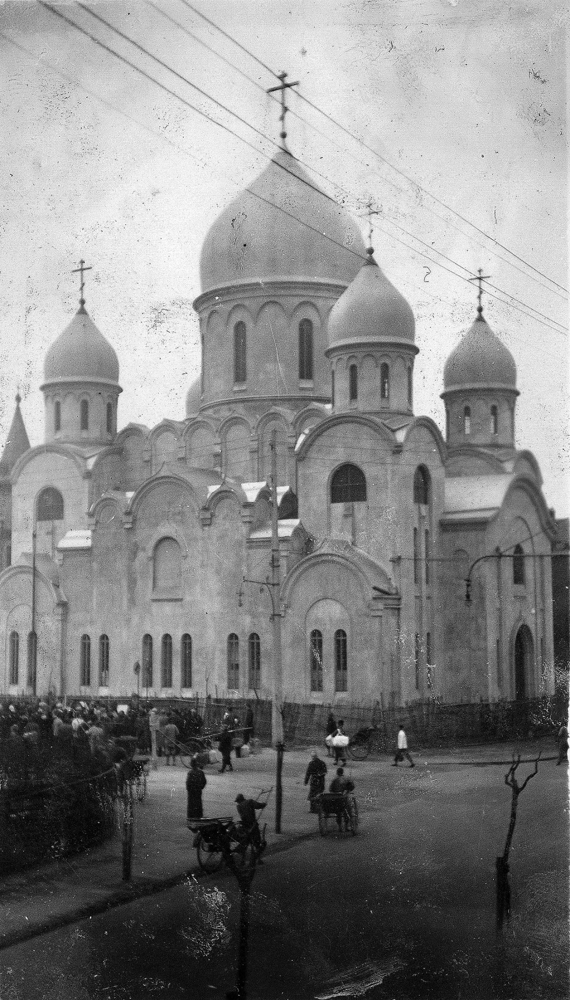
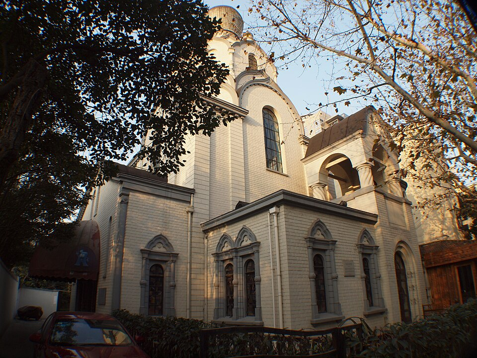

Остановка 2
第2站
Два храма两座教堂
Синьлэ, дом 55. Гаолань, дом 16.
新乐路55号。皋兰路16号。


На Синьлэ, дом 55, стоит собор иконы Божией Матери «Споручница грешных». По-китайски его коротко зовут 圣母大堂.
Угловой камень заложили в мае 1933 года. Деньги собирали сами эмигранты. Чертил архитектор Яков Лихонос. При епископе Иоанне дом довели в 1936–1937 годах. Высота около 35 метров. Внутрь могло войти около 2500 человек. Снаружи он напоминает храм Христа Спасителя в Москве. Тот храм в Москве снесли, а здесь люди собрали свой.
На Гаолань, 16, Никольский храм. Его строили раньше собора, в начале 1930-х. В 1955 году храм закрыли. Дом на улице стоит до сих пор, а службы каждый день там давно кончились.
Собор и Никольский храм я кладу в одну историю. Революция и Гражданская война уже прошли, а семьи в Шанхае всё равно держали церковь.
Внутри на службе я ещё не была, врать не стану. Купола с улицы видны. Фото с тротуара сниму сама.
新乐路55号是圣母大堂，全名很长，供的是“罪人之保障”圣母像。同学口语里就叫圣母大堂。
1933年5月放下基石。钱是侨民自己凑的。图纸是建筑师雅科夫·利霍诺斯画的。伊望主教在的时候，1936到1937年盖完。高大约35米。里面大约坐得下2500人。外观会让人想起莫斯科的基督救世主大教堂。莫斯科那座被拆了，这里的人把自己的盖了起来。
皋兰路16号是圣尼古拉堂。它比大堂早，1930年代初就在盖。1955年教堂关掉。房子还在街上。天天做礼拜，早就没有了。
两座房子说的是同一件事。革命和内战以后，俄国人住在上海，把教堂留在这里。
我不会写成自己已经进去做过礼拜。从人行道上能看见圆顶。我自己的照片还要去拍。